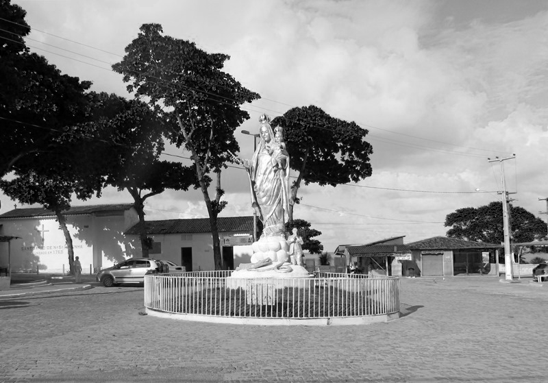
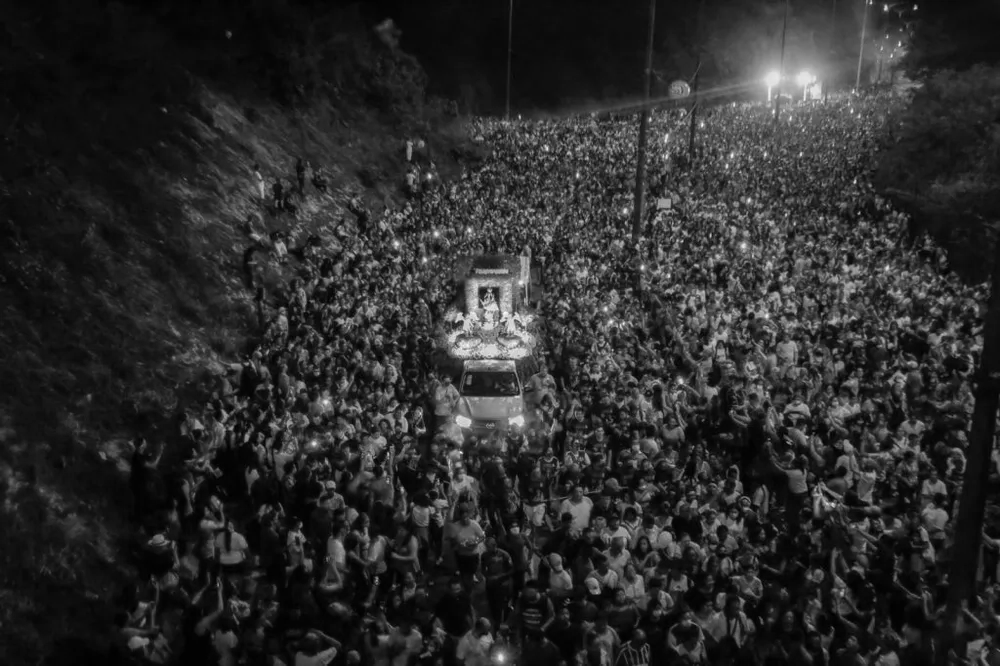
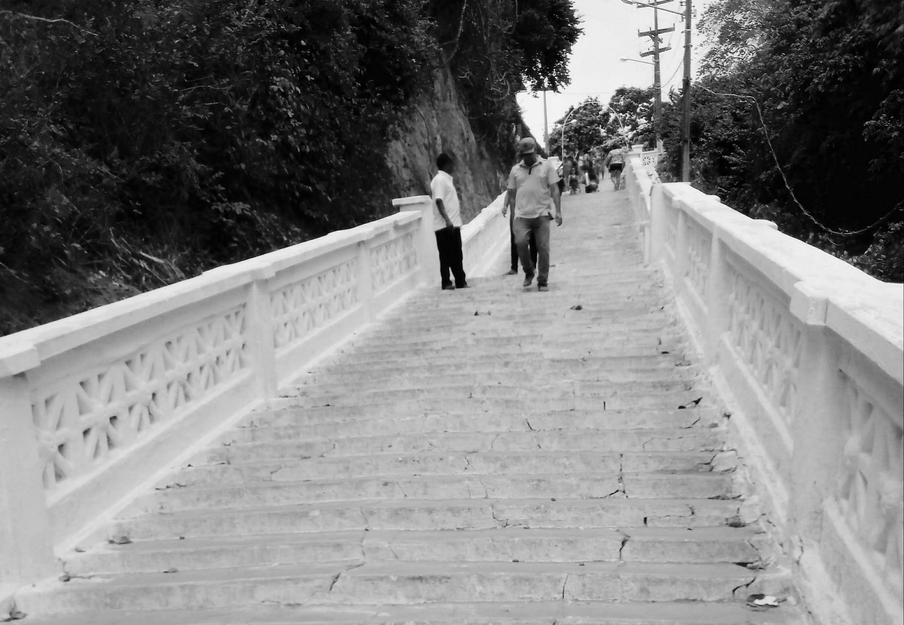

A Capela da Penha é um santuário católico. Construída originalmente em 1763 por colonos portugueses em homenagem a Nossa Senhora da Penha, a capela e a posterior igreja construída ao seu lado, são hoje o ponto final da tradicional Procissão da Penha, que ocorre todos os anos no quinto final de semana antes do Natal. A capela da Penha e seu santuário são locais historicamente ligados a prática religiosa da comunidade de pescadores que deu origem ao hoje bairro da Penha. Situada em um terreno elevado, na metade do século XX foi construída uma escadaria que liga a parte baixa da comunidade - na orla, e onde a maior parte das casas se localizam - à capela onde os devotos professam sua fé. Os 148 degraus da escadaria também se tornaram local recorrente para o pagamento de promessas à Nossa Senhora da Penha pelas graças da Santa.
  